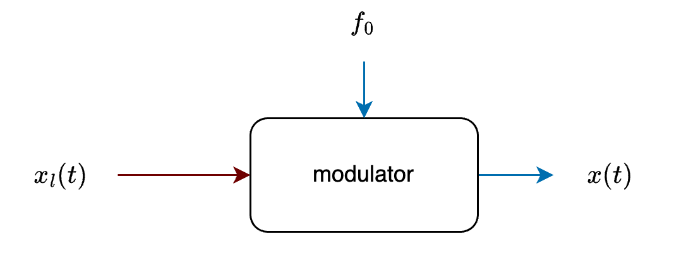
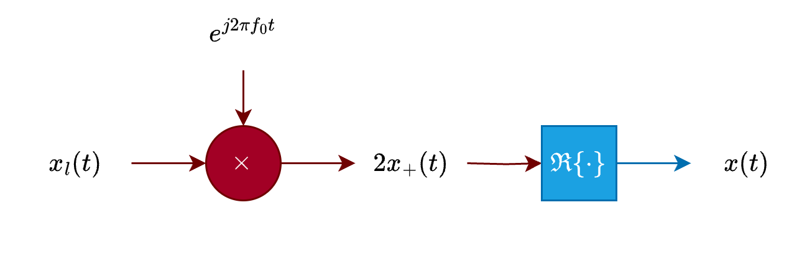
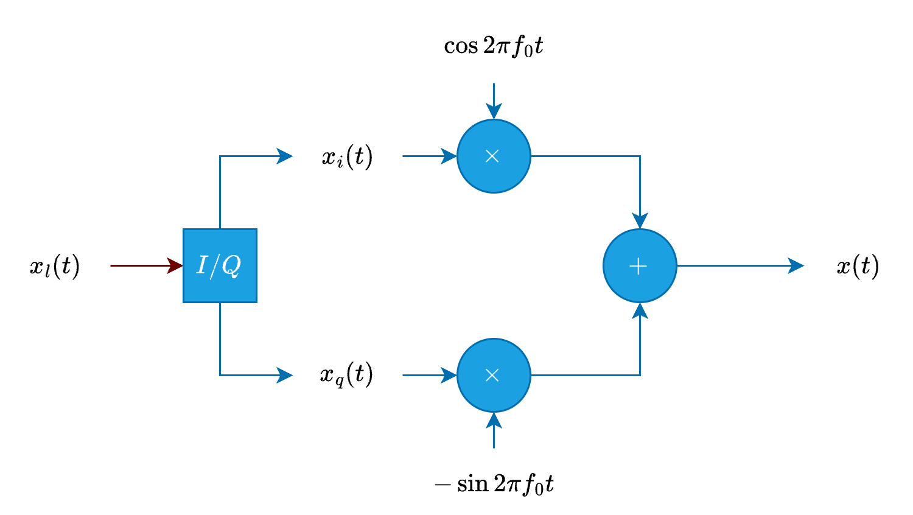
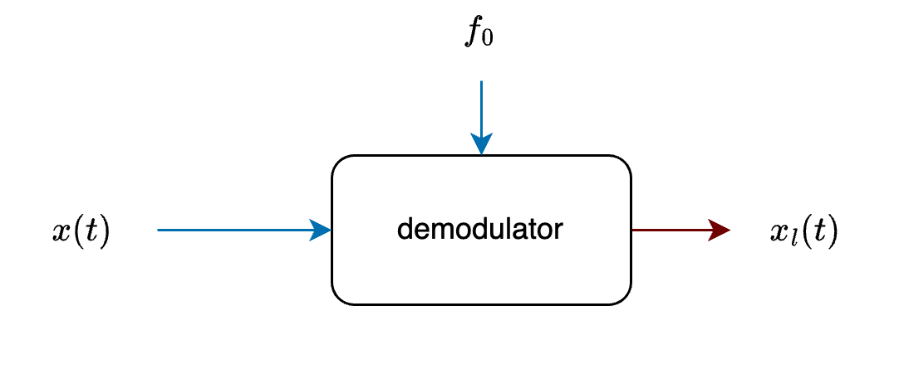
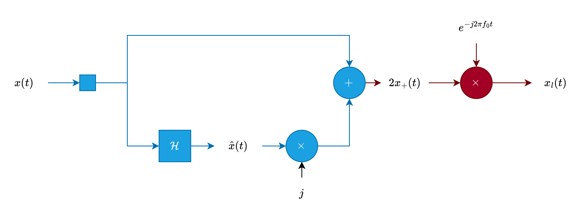
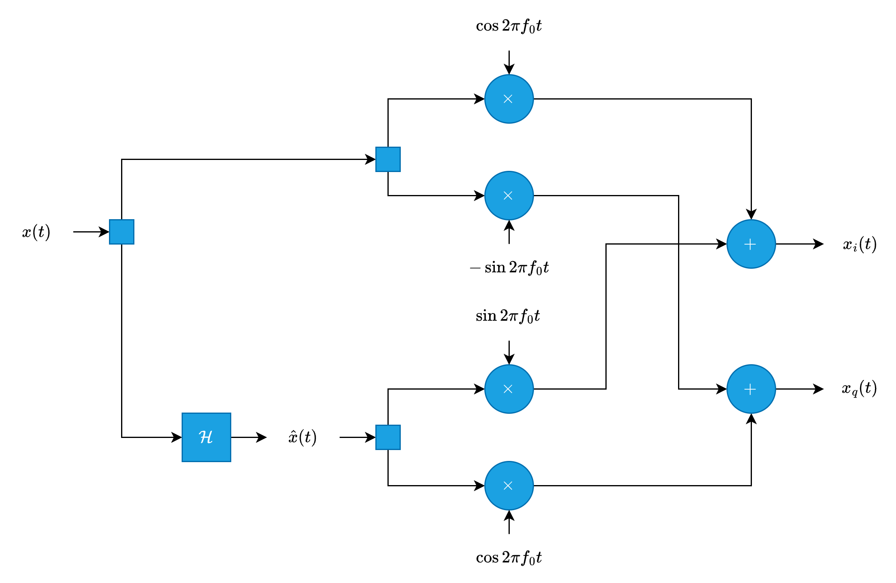

Complex Signal#
Complex Lowpass Equivalent#
Definition: Lowpass Equivalent (or Complex Envelope)
The lowpass equivalent or complex envelope of a signal \(x(t)\), denoted by \(x_l(t)\), is defined as:
Expanding this expression in terms of \(x(t)\) and its Hilbert transform \(\hat{x}(t)\):
Rewriting in terms of real and imaginary parts:
Spectrum of the Lowpass Equivalent#
The spectrum of \(x_l(t)\), denoted by \(X_l(f)\), is given by:
Key Properties
The spectrum of \(x_l(t)\) is centered around zero frequency, making \(x_l(t)\) a complex lowpass signal.
The transformation shifts the spectrum of \(x(t)\) from its original center frequency \(f_0\) to baseband, enabling analysis and processing as a lowpass signal.
Expressing Bandpass Signals in Terms of Their Lowpass Equivalent#
Theorem
A bandpass signal \(x(t)\) can be expressed in terms of its lowpass equivalent \(x_l(t)\) as:
Spectrum Relation:
The spectrum of \(x(t)\) is given by:
Representing Bandpass Signals with Two Lowpass Signals#
A bandpass signal \(x(t)\) can be represented in two ways:
Using its in-phase and quadrature components.
Using its envelope and phase.
In-phase and Quadrature (I/Q) Components#
Definition
The real and imaginary parts of the lowpass equivalent \(x_l(t)\) are called the in-phase component and the quadrature component, respectively. These are denoted as \(x_i(t)\) and \(x_q(t)\):
Expressions for \(x_i(t)\) and \(x_q(t)\):
Reconstruction of \(x(t)\) and \(\hat{x}(t)\)#
The original bandpass signal \(x(t)\) and its Hilbert transform \(\hat{x}(t)\) can be reconstructed from the in-phase (\(x_i(t)\)) and quadrature (\(x_q(t)\)) components of the lowpass equivalent signal \(x_l(t)\).
Specifically, using \(x_i(t)\) and \(x_q(t)\), the original signal \(x(t)\) and its Hilbert transform \(\hat{x}(t)\) can be reconstructed as:
Key Insight
Any bandpass signal \(x(t)\) can be fully represented using two lowpass signals:
The in-phase component \(x_i(t)\).
The quadrature component \(x_q(t)\).
These representations are essential for applications in communication systems, such as modulation and demodulation processes.
Polar Coordinates Representation#
Envelope and Phase
We can express a bandpass signal \(x(t)\) in terms of its magnitude (envelope) and phase in polar coordinates.
Definition
The envelope \(r_x(t)\) and phase \(\theta_x(t)\) of \(x(t)\) are defined as:
The lowpass equivalent signal \(x_l(t)\) can then be written as:
Bandpass Signals in Polar Coordinates#
Definition
A bandpass signal \(x(t)\) can be expressed in terms of its envelope and phase as:
Dependence on Central Frequency#
The lowpass equivalent \(x_l(t)\)—and consequently \(x_i(t)\), \(x_q(t)\), \(r_x(t)\), and \(\theta_x(t)\)—depends on the choice of the central frequency \(f_0\).
Different values of \(f_0\) (as long as \(X_+(f)\) is nonzero only within \([f_0 - W/2, f_0 + W/2]\), where \(W/2 < f_0\)) yield different lowpass signals \(x_l(t)\).
Typically, \(f_0\) is chosen based on the application or communication channel, so it is often implicitly understood.
Modulation Process#
The modulation process converts a lowpass signal into a bandpass signal. The system that performs this operation is called a modulator.
Modulator Diagram

Complex Modulator

Real Modulator

Demodulation Process#
The demodulation process extracts the lowpass signal (\(x_l(t)\), or \(x_i(t)\) and \(x_q(t)\)) from the bandpass signal \(x(t)\).
Demodulator Diagram

Complex Demodulator

Real Demodulator

The block labeled \(\mathcal{H}\) represents a Hilbert transform, which is an LTI system with:
Impulse response: \(h(t) = \frac{1}{\pi t}\)
Transfer function: \(H(f) = -j\text{sgn}(f)\)
Python Example: Bandpass to Lowpass Demodulation#
Bandpass Signal:
Decomposition into I/Q:
Using the analytic signal and lowpass filtering.
Magnitude and Phase:
Bandpass Signal Generation#
Generate a bandpass signal by modulating a lowpass message signal onto a carrier.
Time Vector:
Represents time samples for signal generation.
Lowpass Signal:
A cosine wave at message frequency \( f_m \) with amplitude \( A \).
Bandpass Signal:
The lowpass signal is modulated onto a carrier frequency \( f_0 \) to generate a bandpass signal.
import numpy as np
import matplotlib.pyplot as plt
# Define parameters
T = 1 # Signal duration (seconds)
f0 = 100 # Carrier frequency (Hz)
fm = 2 # Message signal frequency (Hz)
fs = 1000 # Sampling frequency (samples per second)
t = np.arange(0, T, 1/fs) # Time vector (from 0 to T with step size 1/fs)
# Generate a lowpass signal (message signal)
A = 1 # Amplitude of the message signal
x_t_real_lp = A * np.cos(2 * np.pi * fm * t) # Real-valued lowpass message signal
# Modulate the message signal onto a carrier to create a bandpass signal
x_t_bp = x_t_real_lp * np.cos(2 * np.pi * f0 * t) # Bandpass signal
# Plot the bandpass signal
plt.figure(figsize=(12, 6))
plt.plot(t, x_t_bp, label='Bandpass Signal')
plt.title('Bandpass Signal')
plt.xlabel('Time (s)')
plt.ylabel('Amplitude')
plt.grid(True) # Add a grid for better visualization
plt.legend()
plt.show()
Analytic Signal, In-phase, and Quadrature Components#
Decompose a bandpass signal into its analytic signal, in-phase, and quadrature components.
Hilbert Transform (Analytic Signal):
The analytic signal \( \hat{x}(t) \) is: $\( \hat{x}(t) = x_{\text{bp}}(t) + j \cdot H\{x_{\text{bp}}(t)\} \)$
where \( H\{\cdot\} \) is the Hilbert transform.
In-phase Component:
Mixing down to baseband involves multiplication by a cosine:
Quadrature Component:
The quadrature component is extracted by:
Lowpass Filtering:
Use a Butterworth lowpass filter to remove high-frequency components:
where LPF is the lowpass filtering operation.
Complex Lowpass Equivalent:
Combine the in-phase and quadrature components:
import numpy as np
import matplotlib.pyplot as plt
from scipy.signal import hilbert, butter, filtfilt
# Generate the analytic signal (complex signal using Hilbert transform)
x_hat = hilbert(x_t_bp) # Analytic signal of the bandpass signal
# Mix down the analytic signal to baseband
xi_t = np.real(x_t_bp * np.cos(2 * np.pi * f0 * t) + x_hat * np.sin(2 * np.pi * f0 * t)) # In-phase component
xq_t = np.real(x_hat * np.cos(2 * np.pi * f0 * t) - x_t_bp * np.sin(2 * np.pi * f0 * t)) # Quadrature component
# Design a low-pass Butterworth filter to remove high-frequency components
b, a = butter(2, 2 * fm / (fs / 2)) # Butterworth filter of order 2 with cutoff at 2*fm
I = filtfilt(b, a, xi_t) # Filtered In-phase (I) component
Q = filtfilt(b, a, xq_t) # Filtered Quadrature (Q) component
# Form the complex lowpass equivalent signal
complex_lowpass_equivalent = I + 1j * Q # Complex lowpass representation of the signal
# Plot the In-phase (I) and Quadrature (Q) components
plt.figure(figsize=(12, 6))
# Plot the In-phase (I) component
plt.subplot(2, 1, 1)
plt.plot(t, I, linewidth=1.5)
plt.title('In-phase (I) Component')
plt.xlabel('Time (s)')
plt.ylabel('Amplitude')
plt.grid(True)
# Plot the Quadrature (Q) component
plt.subplot(2, 1, 2)
plt.plot(t, Q, linewidth=1.5)
plt.title('Quadrature (Q) Component')
plt.xlabel('Time (s)')
plt.ylabel('Amplitude')
plt.grid(True)
plt.tight_layout()
plt.show()
Magnitude and Phase#
Compute and compare the magnitude and phase of a signal from the complex representation and analytical calculations.
Magnitude from Complex Signal:
Phase from Complex Signal:
Analytical Magnitude:
Using \( I(t) \) (in-phase) and \( Q(t) \) (quadrature):
Analytical Phase:
Phase is computed using the arctangent of \( Q(t) \) and \( I(t) \):
Comparison:
Compare \( r(t) \) with \( r_{\text{ana}}(t) \), and \( \theta(t) \) with \( \theta_{\text{ana}}(t) \) by plotting.
import numpy as np
import matplotlib.pyplot as plt
# Compute magnitude and phase from the complex lowpass signal
r_t = np.abs(complex_lowpass_equivalent) # Magnitude of the complex signal
theta_t = np.angle(complex_lowpass_equivalent) # Phase of the complex signal
# Compute magnitude and phase analytically using filtered I and Q components
r_t_ana = np.sqrt(I**2 + Q**2) # Analytical magnitude calculation
theta_t_ana = np.arctan2(Q, I) # Analytical phase calculation using arctangent function
# Plot comparison of magnitudes
plt.figure(figsize=(12, 6))
# Magnitude comparison
plt.subplot(2, 1, 1)
plt.plot(t, r_t, 'b-', linewidth=1.5, label='r_t from complex signal')
plt.plot(t, r_t_ana, 'r--', linewidth=1.5, label='r_t_ana analytical calculation')
plt.title('Comparison of Magnitudes')
plt.xlabel('Time (s)')
plt.ylabel('Magnitude')
plt.legend()
plt.grid(True)
# Phase comparison
plt.subplot(2, 1, 2)
plt.plot(t, np.unwrap(theta_t), 'b-', linewidth=1.5, label='theta_t from complex signal')
plt.plot(t, np.unwrap(theta_t_ana), 'r--', linewidth=1.5, label='theta_t_ana analytical calculation')
plt.title('Comparison of Phases')
plt.xlabel('Time (s)')
plt.ylabel('Phase (rad)')
plt.legend()
plt.grid(True)
# Adjust layout and show the plots
plt.tight_layout()
plt.show()
Matlab Example: Modulation and Demodulation Using Complex Envelope#
This example demonstrates the step-by-step of a fundamental communication process:
Modulation: Information is encoded into a higher carrier frequency to prepare it for transmission.
Transmission: The modulated signals are sent through a physical channel, which may introduce noise.
Reception: The noisy waveforms are received at the destination.
Demodulation: The received signals are processed to extract and reconstruct the original information.